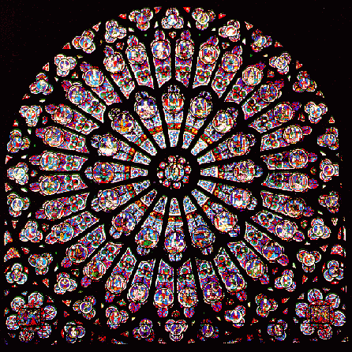

We leven in een samenleving waarin creativiteit alom wordt gepropageerd als goed en waarin tegelijkertijd wordt bezuinigd op experimentele kunst en fundamentele wetenschap. Dat komt door onze steeds beperktere definitie van wat 'creatief zijn' betekent. Een essay over dit sleutelwoord van onze tijd.
Hoe creativiteit een talent van iedereen en een oplossing voor alles werd.
Het doel:
erachter komen 'hoe het creatieve proces werkt, en welke omstandigheden de generatie van originele ideeën aanmoedigen of juist tegenwerken.'
In 1996 publiceerde hij de resultaten van zijn onderzoek in het boek Creativity: Flow and the Psychology of Discovery and Invention. Sommige mensen, schreef Csikszentmihalyi in de inleiding van dat boek, 'vinden het onderzoeken van creativiteit een elitaire afleiding van veel belangrijkere problemen [...].' Volgens hen zouden we al onze energie moeten gebruiken om zaken als overbevolking en armoede te bestrijden, en zou een interesse in creativiteit maar een 'onnodige luxe' zijn. '
Maar, meende Csikszentmihalyi, zulke problemen 'kunnen we alleen oplossen wanneer we er veel aandacht aan besteden,

Het nieuwe heiligdom: de creatieve industrie
Nu, twintig jaar later, zou Csikszentmihalyi zo'n disclaimer niet meer nodig hebben. Inmiddels doen bedrijven en overheden niets anders dan het aanmoedigen van 'creatieve oplossingen' voor zaken als klima tverandering en grondstoffenschaarste.
Creativiteit is niet voor niets een van de '21ste-eeuwse vaardigheden' die scholieren moeten meekrijgen. Vorige week deed SLO, het nationaal expertisecentrum leerplanontwikkeling, nog een oproep voor het maken van stappenplannen om de leerlingen van de toekomst creatief te maken.
En complexe vraagstukken die om een oplossing vragen zijn niet de enige reden. In een samenleving waar niet alleen fysieke producten, maar vooral ook intellectueel eigendom verhandeld wordt, heb je nu eenmaal meer aan creativiteit dan aan, ik noem maar wat, het talent om heel lang en heel zorgvuldig een zeventiende-eeuws schilderij te restaureren.
'Each and every one of us is creative,' schrijven de broers David en Tom Kelley in het boek Creative Confidence
Daarom verwacht de overheid veel van de creatieve industrie: Nederland moet in 2020 'de meest creatieve economie van Europa' worden. En heeft het bovendien de hoop gevestigd op de creatieve klasse: die moet naast het aanjagen van de creatieve industrie, ook de stedelijke ontwikkeling opstuwen.
De populariteit van het begrip zie je ook terug in de enorme
hoeveelheid boeken, blogs en artikelen met titels als: Creativity, Inc., Hoe creativiteit werkt, en Creativiteit. Hoe? Zo!
De boodschap is duidelijk: wie nog niet creatief is, kan het (maar beter) wel worden. 'Each and every one of us is creative,' schrijven de broers David en Tom Kelley (respectievelijk oprichter van het Stanford Institute of Design en auteur van The Art of Innovation) bijvoorbeeld in het vorig jaar verschenen Creative Confidence. Het boek is bedoeld om iedereen die wil de 'principes en strategieën' bij te brengen die we nodig hebben 'to tap into our creative potential.'
'Creativiteit' is, kortom, een sleutelwoord tot deze tijd - net zo heilig als 'duurzaam' en 'transparant.' Maar wat wordt er precies mee bedoeld? Waar komt de obsessie ermee vandaan? En gaat er, in alle ophemeling ervan, ook niet wat verloren?